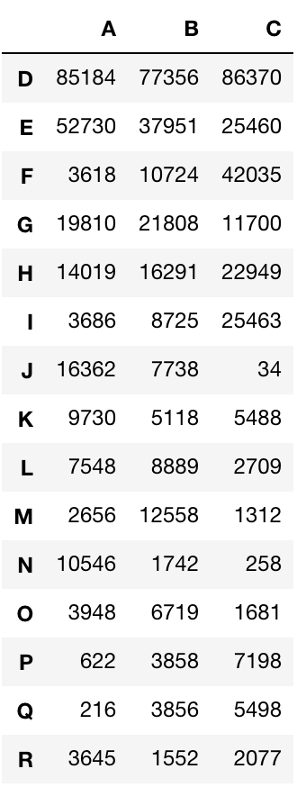
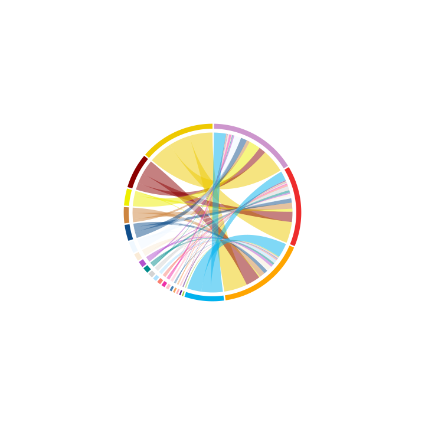
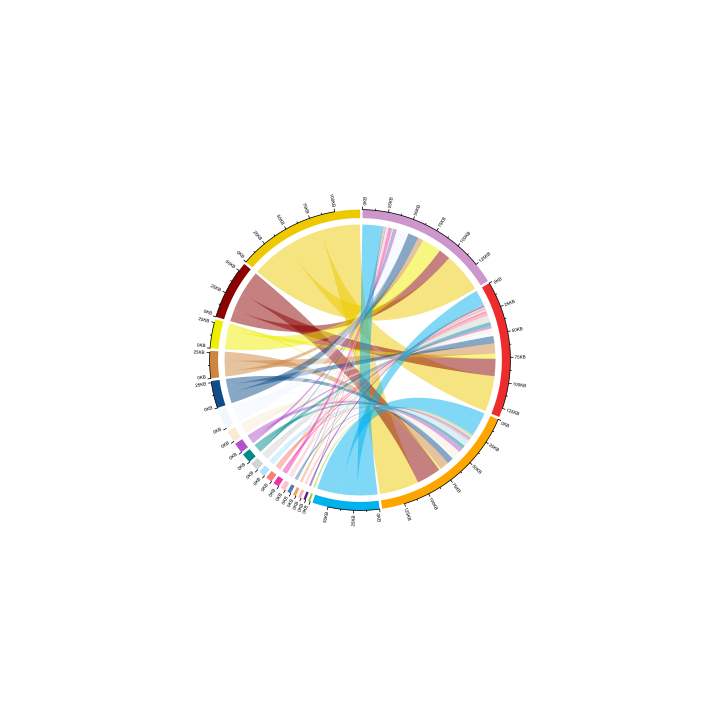
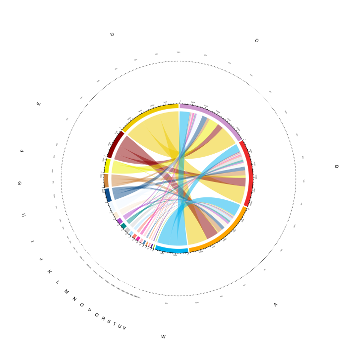
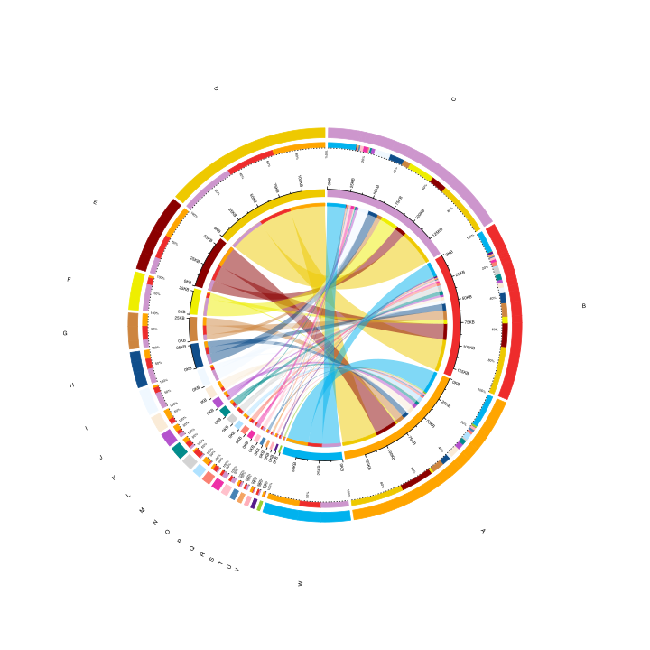

circos plot
应用场景
展示各组数据之间所占比例
创建一个实例数据结构如下

#读取数据
load('./test_cir.Rdata') #rt_cir
load('./color_list.Rdata') #color_list
#定义各个组的颜色
state_col <- color_list[3:25]
names(state_col) <- c(colnames(rt_cir), row.names(rt_cir))
state_col2 <- state_col[4:23]
colmat <- rep(state_col2, 3)
dim(colmat) <- dim(rt_cir)
作图
#简单的展示各个组别的数量大小和比例
circos.par(start.degree = 90, clock.wise = FALSE)
cdm_res = chordDiagram(rt_cir, col = colmat, grid.col = state_col, directional = FALSE,
annotationTrack = "grid", preAllocateTracks = list(track.height = 0.5))

#为各个组别加上刻度标签
circos.par(start.degree = 90, clock.wise = FALSE)
cdm_res = chordDiagram(rt_cir, col = colmat, grid.col = state_col, directional = FALSE,
annotationTrack = "grid", preAllocateTracks = list(track.height = 0.5))
#为各个组别刻度标签
circos.track(track.index = 2, panel.fun = function(x, y) {
sector.index = get.cell.meta.data("sector.index")
xlim = get.cell.meta.data("xlim")
ylim = get.cell.meta.data("ylim")
xlim = CELL_META$xlim
breaks = seq(0, xlim[2], by = 5e4)
circos.axis(major.at = breaks, labels = paste0(breaks/2000, "KB"), labels.cex = 0.5, minor.ticks = 1, labels.facing = "reverse.clockwise")
}, bg.border = NA)

#加上一个比例刻度和组名
circos.par(start.degree = 90, clock.wise = FALSE)
cdm_res = chordDiagram(rt_cir, col = colmat, grid.col = state_col, directional = FALSE,
annotationTrack = "grid", preAllocateTracks = list(track.height = 0.5))
###为各个组别刻度标签
for(si in get.all.sector.index()) {
circos.axis(h = "top", labels.cex = 0.3, sector.index = si, track.index = 2)
}
# the second axis as well as the sector labels are added in this track
circos.track(track.index = 1, panel.fun = function(x, y) {
xlim = get.cell.meta.data("xlim")
ylim = get.cell.meta.data("ylim")
sector.name = get.cell.meta.data("sector.index")
xplot = get.cell.meta.data("xplot")
circos.lines(xlim, c(mean(ylim), mean(ylim)), lty = 3) # dotted line
by = ifelse(abs(xplot[2] - xplot[1]) > 30, 0.2, 0.5)
for(p in seq(by, 1, by = by)) {
circos.text(p*(xlim[2] - xlim[1]) + xlim[1], mean(ylim) + 0.1,
paste0(p*100, "%"), cex = 0.3, adj = c(0.5, 0), niceFacing = TRUE)
}
circos.text(mean(xlim), 1, sector.name, niceFacing = TRUE, adj = c(0.5, 0))
}, bg.border = NA)
circos.clear()

#为使图片看起来更加饱满，外围再重复叠加组别比列图
circos.par(start.degree = 90, clock.wise = FALSE)
cdm_res = chordDiagram(rt_cir, col = colmat, grid.col = state_col, directional = FALSE,
annotationTrack = "grid", preAllocateTracks = list(track.height = 0.5))
for(i in seq_len(nrow(cdm_res))) {
if(cdm_res$value[i] > 0) {
circos.rect(cdm_res[i, "x1"], -uy(3.5, "mm"),
cdm_res[i, "x1"] - abs(cdm_res[i, "value"]), -uy(2.5, "mm"),
col = state_col[cdm_res$cn[i]], border = state_col[cdm_res$cn[i]], sector.index = cdm_res$rn[i], track.index = 2)
circos.rect(cdm_res[i, "x2"], -uy(3.5, "mm"),
cdm_res[i, "x2"] - abs(cdm_res[i, "value"]), -uy(2.5, "mm"),
col = state_col[cdm_res$rn[i]], border = state_col[cdm_res$rn[i]], sector.index = cdm_res$cn[i], track.index = 2)
circos.rect(cdm_res[i, "x1"], -uy(-0.75, "mm"),
cdm_res[i, "x1"] - abs(cdm_res[i, "value"]), -uy(-0.85, "mm"),
col = state_col[cdm_res$cn[i]], border = state_col[cdm_res$cn[i]], sector.index = cdm_res$rn[i], track.index = 1)
circos.rect(cdm_res[i, "x2"], -uy(-0.75, "mm"),
cdm_res[i, "x2"] - abs(cdm_res[i, "value"]), -uy(-0.85, "mm"),
col = state_col[cdm_res$rn[i]], border = state_col[cdm_res$rn[i]], sector.index = cdm_res$cn[i], track.index = 1)
circos.rect(cdm_res[i, "x1"], -uy(-0.95, "mm"),
cdm_res[i, "x1"] - abs(cdm_res[i, "value"]), -uy(-1.15, "mm"),
col = state_col[cdm_res$rn[i]], border = state_col[cdm_res$rn[i]], sector.index = cdm_res$rn[i], track.index = 1)
circos.rect(cdm_res[i, "x2"], -uy(-0.95, "mm"),
cdm_res[i, "x2"] - abs(cdm_res[i, "value"]), -uy(-1.15, "mm"),
col = state_col[cdm_res$cn[i]], border = state_col[cdm_res$cn[i]], sector.index = cdm_res$cn[i], track.index = 1)
}
}
circos.track(track.index = 2, panel.fun = function(x, y) {
sector.index = get.cell.meta.data("sector.index")
xlim = get.cell.meta.data("xlim")
ylim = get.cell.meta.data("ylim")
xlim = CELL_META$xlim
breaks = seq(0, xlim[2], by = 5e4)
circos.axis(major.at = breaks, labels = paste0(breaks/2000, "KB"), labels.cex = 0.5, minor.ticks = 1, labels.facing = "reverse.clockwise")
}, bg.border = NA)
circos.track(track.index = 1, panel.fun = function(x, y) {
sector.index = get.cell.meta.data("sector.index")
xlim = get.cell.meta.data("xlim")
ylim = get.cell.meta.data("ylim")
circos.text(mean(xlim), 0.82, sector.index, cex = 0.7, facing = "reverse.clockwise", niceFacing = TRUE)
xlim = CELL_META$xlim
sector.name = get.cell.meta.data("sector.index")
xplot = get.cell.meta.data("xplot")
circos.lines(xlim, c(mean(ylim)/2.04, mean(ylim)/2.04), lty = 3) # dotted line
by = ifelse(abs(xplot[2] - xplot[1]) > 30, 0.2, 0.5)
for(p in seq(by, 1, by = by)) {
circos.text(p*(xlim[2] - xlim[1]) + xlim[1], mean(ylim)/2.5,
paste0(p*100, "%"), cex = 0.4, adj = c(0.5, 0), niceFacing = TRUE, facing = "reverse.clockwise")
}
}, bg.border = NA)
circos.clear()
